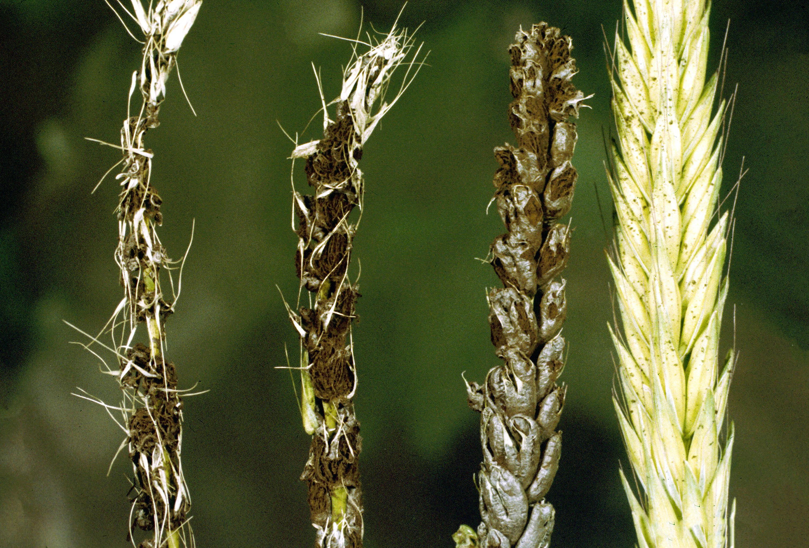
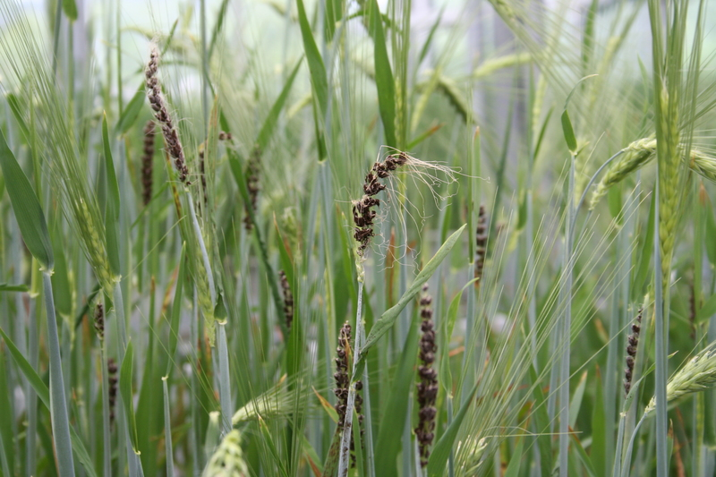
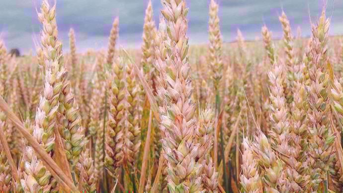

Vue d'Ensemble des Céréales
Une exploration approfondie des principales céréales et de leur importance dans l'agriculture moderne
60%
de la Production Mondiale
2.7B
Population Nourrie
+15%
Croissance Annuelle
Note importante : Les céréales représentent
la base de notre système alimentaire mondial. Leur santé est
cruciale pour notre sécurité alimentaire.
Principales Maladies
Guide détaillé des maladies courantes affectant les céréales

Maladie Charbonneuse
Une maladie fongique grave affectant principalement les grains de blé.
- Spores noires caractéristiques
- Affecte le rendement
- Contamination rapide

Charbon du Blé
Maladie destructrice affectant les épis de blé.
- Destruction totale des épis
- Propagation rapide
- Impact économique majeur

Les Fusarioses
Infection fongique complexe touchant plusieurs céréales.
- Mycotoxines dangereuses
- Multiples souches
- Résistance croissante
Support et Assistance
Notre équipe d'experts est disponible pour vous aider
Support Technique
Besoin d'aide avec votre diagnostic ?
- Experts disponibles 7j/7
- Réponse sous 24h
- Conseils personnalisés
Centre de Documentation
Accédez à nos ressources complètes
- Guides détaillés
- Fiches techniques
- Études de cas
Formation Continue
Améliorez vos connaissances
- Webinaires en direct
- Sessions pratiques
- Certifications
Conseil : N'hésitez pas à contacter notre
équipe pour toute question ou besoin d'assistance
spécifique.